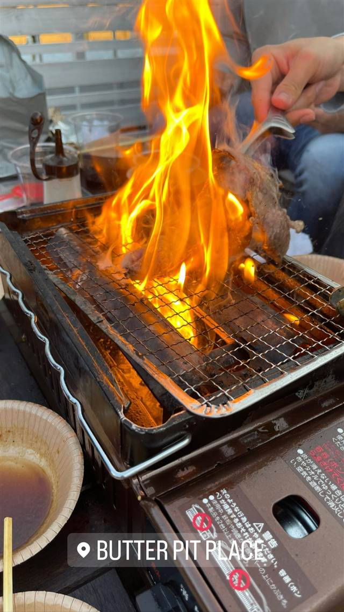
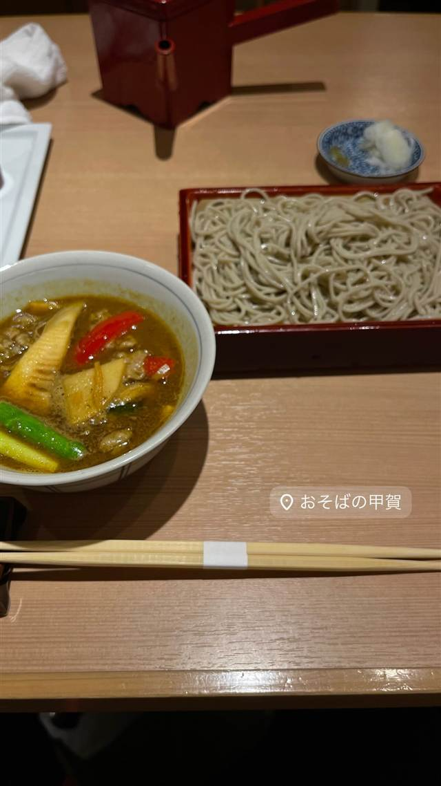
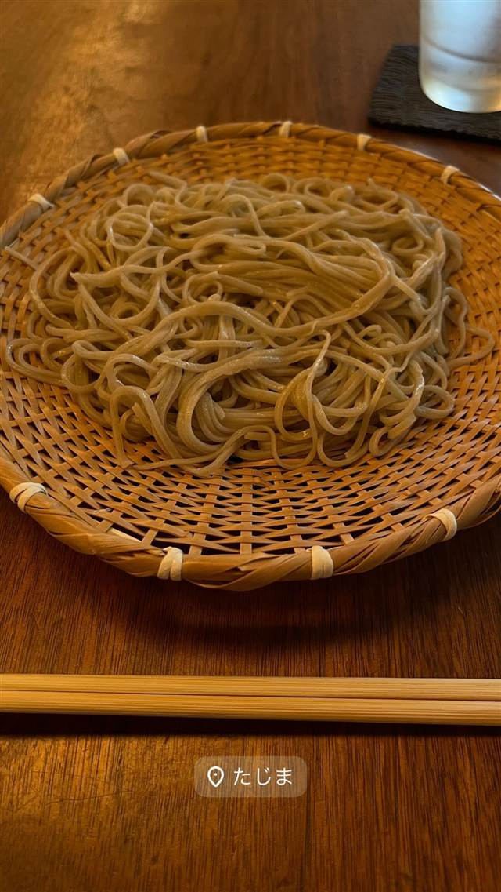
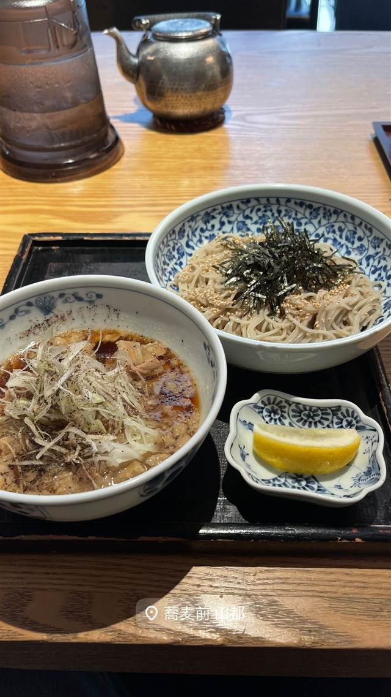
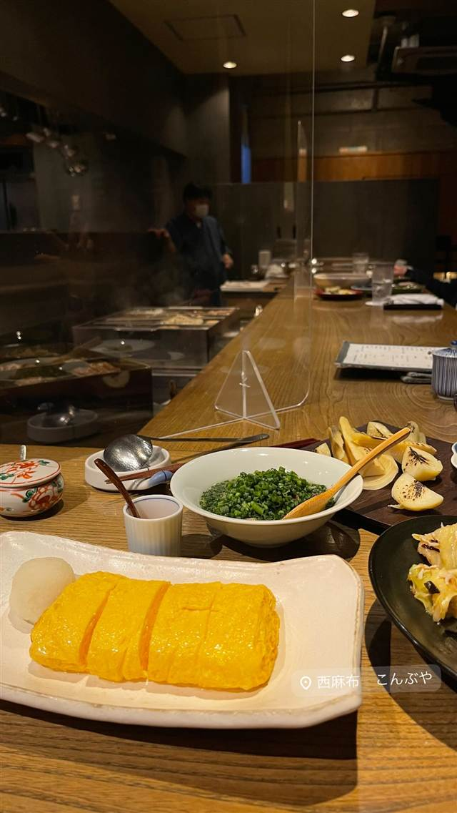
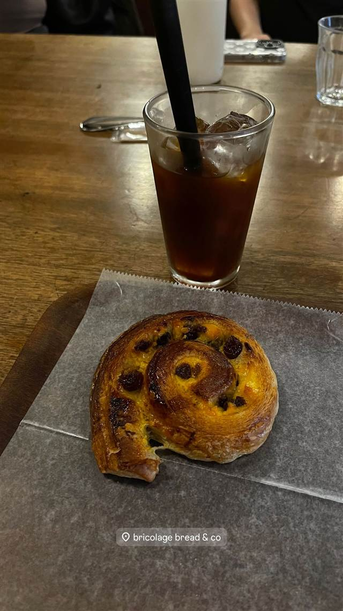

BUTTER PIT PLACE
系列焼肉店の国産和牛を、白いソファでくつろぎながら炭火焼き
BUTTER PIT PLACE
西麻布の交差点近くにあるルーフトップBBQスペース。系列の焼肉店から仕入れる国産和牛を使い、白いラタンソファでくつろぎながら炭火焼きを楽しめる。
TRIVIA
豆知識
- 屋上で白いラタンソファに座りながらBBQを楽しめる都心の隠れスポット
| 看板 | プレミアムBBQプラン（特製タン、牛サガリ、田村牛など） |
|---|---|
| こだわり | 米豪産ではなく系列の焼肉店から仕入れる国産和牛を使用 |
| どこから | 都心 |
| 行くなら | 予約必須 |
| 予算 | 夜 ¥6,000～¥7,999 |
| 予約 | 予約可 |
| 場所 | 六本木駅 東京都港区西麻布 |
| メモ | 西麻布交差点から徒歩1分のビル屋上BBQ会場。営業10:30〜22:00で4部制、予約はInstagramのDMで受付 |
食べたもの：炭火焼き
NEARBY
近い店・同じ系統の店
-
 韓国 広尾
胡同 西麻布店（フートン）
西麻布の裏路地で30年、名物はねぎタン塩とカムジャタン鍋
夜 ¥4,000～¥4,999
韓国 広尾
胡同 西麻布店（フートン）
西麻布の裏路地で30年、名物はねぎタン塩とカムジャタン鍋
夜 ¥4,000～¥4,999
-

そば 乃木坂駅 おそばの甲賀 赤坂砂場で14年修行した店主が営む、ミシュラン掲載の石臼挽きそば 昼 ¥2,000～¥2,999 夜 ¥6,000～¥7,999 -

そば 広尾 蕎麦たじま 江戸前蕎麦にフレンチ風プリフィクス野菜料理を組み合わせた独自の店 昼 ¥1,000～¥1,999 夜 ¥4,000～¥4,999 -

そば 六本木 蕎麦前 山都（六本木ヒルズけやき坂通り店） 毎朝築地で仕入れる鮮魚と十割蕎麦を楽しむ蕎麦前スタイル 昼 ¥1,000～¥1,999 夜 ¥5,000～¥5,999 -

そば 広尾駅 こんぶや 西麻布 知床の希少な羅臼昆布を店主自ら買い付ける、30種以上のおでん 夜 ¥5,000～ -

ベーカリー 六本木 bricolage bread & co.（六本木ヒルズけやき坂テラス店） 大阪のパン屋と西麻布フレンチ、ノルウェーの3者が生んだ全粒粉パン 昼 ¥1,000～¥1,999 夜 ¥1,000～¥1,999